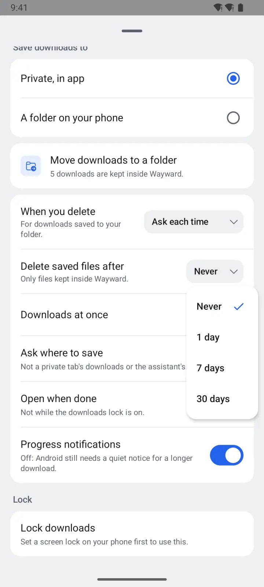
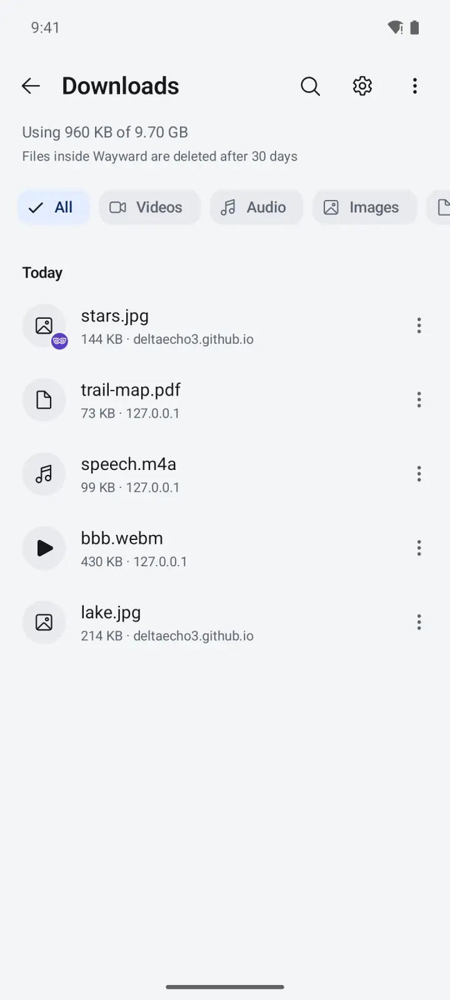
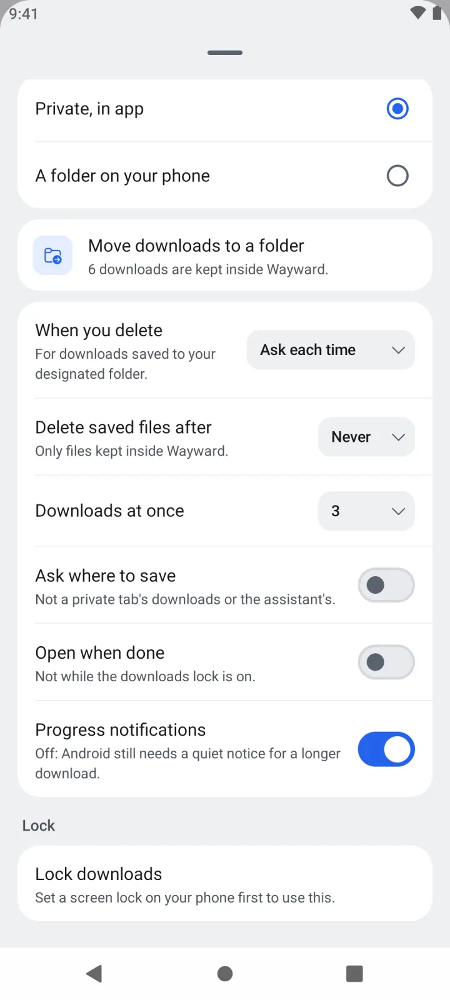

Download settings
How-to
You can manage all download settings on one sheet. Open it from Settings > Downloads, or the gear on the Downloads screen. The sheet scrolls.

Save downloads to, and When you delete
Where new downloads go, and what Delete does to files in your own folder. See choose where downloads go.
Delete old files by themselves
Delete saved files after: Never (the default), 1 day, 7 days or 30 days. It only deletes files kept inside Wayward; files in your folder stay. If you already have older files when you turn it on, Wayward asks Delete older files now? and says how many. While it's on, the Downloads screen says how long files are kept.


How many at once
Downloads at once: 1 to 5, or No limit. It starts at 3. Downloads past the limit wait their turn and say Waiting for one to finish. More at once share your connection, so each goes slower.
The switches
- Ask where to save (off): each download asks Save this download where?: Private, in app or A folder on your phone. A private tab's downloads and the assistant's don't ask.
- Open when done (off): a download that finishes while you're in Wayward opens by itself. Not while the downloads lock is on.
- Progress notifications (on): a notification shows each running download's progress, with Cancel. Off, a quick download shows nothing, and a longer one shows a quiet notice without progress (Android needs one), in its own Downloads (quiet) channel.

A download's notification only says what kind it is ("Downloading video", "Downloading image", "Downloading file", "Saving PDF" or "Making GIF"), never the file's name, and your lock screen doesn't show it at all.
Lock
Lock downloads keeps Downloads behind your fingerprint, face or PIN. It's on by default. See locks.